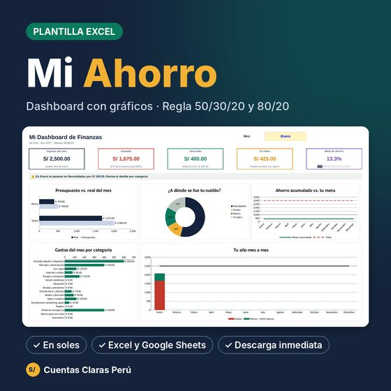

Gratificación de diciembre 2026: cuánto te toca y cuándo te pagan
La gratificación de diciembre es uno de los dos pagos extra que recibes al año por ley si trabajas en planilla en una empresa privada. El otro es la gratificación de julio, por Fiestas Patrias. Aquí te explicamos cuánto te toca, cuándo te deben pagar y cómo comprobar que el monto sea el correcto.
¿Quieres saber tu monto exacto? Ingresa tu sueldo y tus meses trabajados.
Calcular ahora¿Cuándo te deben pagar?
Tu empresa tiene plazo hasta el 15 de diciembre. Si te paga después, está incumpliendo la ley y puede ser multada por SUNAFIL.
¿Cuánto te toca?
Si trabajaste los seis meses completos de julio a diciembre, te toca un sueldo completo. Si entraste a mitad del semestre, te toca una parte: un sexto de tu sueldo por cada mes completo que trabajaste. Si sigues trabajando en la fecha de pago, diciembre cuenta como mes completo.
A eso se suma una bonificación extraordinaria del 9%. Es el aporte que tu empresa pagaría a EsSalud y que la ley ordena entregarte a ti. Si tienes EPS, el bono es de 6.75%.
¿Qué entra en el cálculo?
- Tu sueldo básico.
- La asignación familiar, si la recibes: S/ 123 desde octubre de 2026.
- Horas extras, comisiones u otros pagos que recibas de forma regular (al menos tres meses del semestre).
Tres ejemplos
1. Sueldo mínimo con asignación familiar, semestre completo
María gana el sueldo mínimo (S/ 1,230), tiene un hijo de 5 años y trabajó de julio a diciembre.
| Base: 1,230 + 123 | S/ 1,353.00 |
| Gratificación: 1,353 ÷ 6 × 6 | S/ 1,353.00 |
| Bono 9% | S/ 121.77 |
| María recibe | S/ 1,474.77 |
2. Entró a mitad del semestre
Jorge gana S/ 3,000 y empezó a trabajar el 1 de setiembre. Tiene cuatro meses completos: setiembre, octubre, noviembre y diciembre.
| Gratificación: 3,000 ÷ 6 × 4 | S/ 2,000.00 |
| Bono 9% | S/ 180.00 |
| Jorge recibe | S/ 2,180.00 |
3. Trabaja en una pequeña empresa
Carla gana S/ 2,000 en una empresa inscrita en el REMYPE como pequeña empresa. En ese régimen la gratificación es la mitad de un sueldo.
| Gratificación: 2,000 × 50% | S/ 1,000.00 |
| Bono 9% | S/ 90.00 |
| Carla recibe | S/ 1,090.00 |
En una microempresa no corresponde gratificación.
¿Le descuentan algo?
A la gratificación no le descuentan AFP ni ONP, y el bono del 9% llega completo. Sí puede tener retención de impuesto a la renta si lo que ganas en el año supera las 7 UIT (S/ 38,500 en 2026). Si ganas menos, recibes todo.
¿Y si no me pagan?
- Pide el pago por escrito a tu empresa (un correo sirve como constancia).
- Si no responden, presenta una denuncia en SUNAFIL. Se puede hacer en línea y es gratis.
- Guarda tus boletas de pago: son tu prueba de cuánto ganas y desde cuándo trabajas.
Calcula tu gratificación en 10 segundos.
Calcular ahoraPreguntas frecuentes
¿Me toca gratificación si renuncio antes de diciembre?
Sí. Se llama gratificación trunca y te la pagan en tu liquidación, por cada mes completo trabajado en el semestre. Necesitas al menos un mes completo.
¿Si trabajo con recibos por honorarios me toca?
No, porque no estás en planilla. Pero si en la práctica cumples horario, recibes órdenes y trabajas solo para esa empresa, podrías tener una relación laboral encubierta y reclamarla ante SUNAFIL.
¿Las faltas o los descansos médicos me restan?
Las vacaciones y los descansos médicos pagados cuentan como tiempo trabajado. Las faltas injustificadas pueden reducir el monto.
¿Qué pasa si mi sueldo cambió durante el semestre?
Se usa el sueldo que tienes en el mes en que te pagan la gratificación.

Organiza tu sueldo con un dashboard
Anota tus gastos y mira en gráficos a dónde se va tu dinero y cuánto ahorrar cada mes. Regla 50/30/20 u 80/20, en soles.